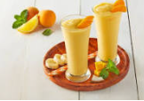
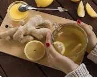
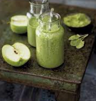

Smoothie de Frutas Tropicales
Ingredientes:
- 1 plátano
- 1 taza de piña
- 1/2 taza de mango
- 1/2 taza de leche de coco
- 1/2 taza de yogur griego
- 1 cucharada de miel
Preparación:
- Coloca todos los ingredientes en una licuadora.
- Mezcla hasta obtener una consistencia suave y homogénea.
- Sirve en un vaso y disfruta.
Infusión de Jengibre y Limón
Ingredientes:
- 1 trozo de jengibre fresco
- 1 limón
- 1 cucharada de miel
- Agua caliente
Preparación:
- Ralla el jengibre y exprime el jugo del limón.
- Agrega el jengibre rallado y el jugo de limón a una taza de agua caliente.
- Deja reposar durante 5 minutos y luego agrega la miel al gusto.
- Remueve bien y disfruta de esta refrescante infusión.
Batido Verde Energizante
Ingredientes:
- 2 tazas de espinacas frescas
- 1 plátano
- 1 manzana verde
- 1 taza de leche de almendras
- 1 cucharada de mantequilla de almendras
- 1 cucharada de miel
- Hielo al gusto
Preparación:
- Agrega todos los ingredientes a una licuadora.
- Mezcla hasta obtener una consistencia suave y homogénea.
- Sirve en un vaso y disfruta de este batido energizante.